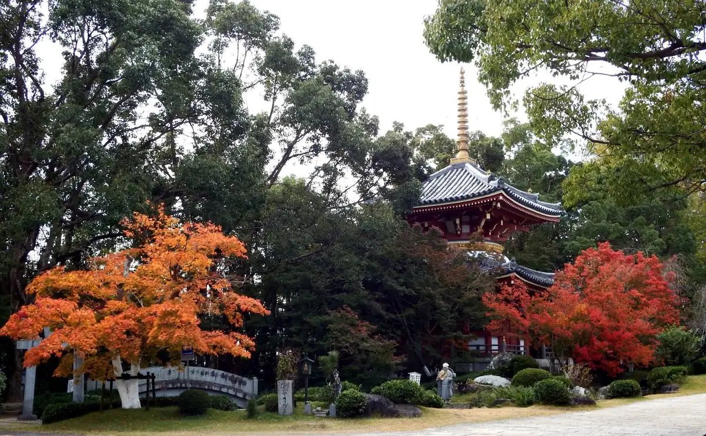
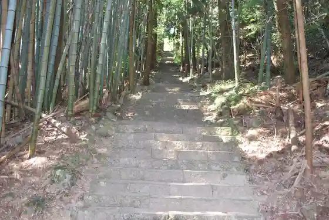
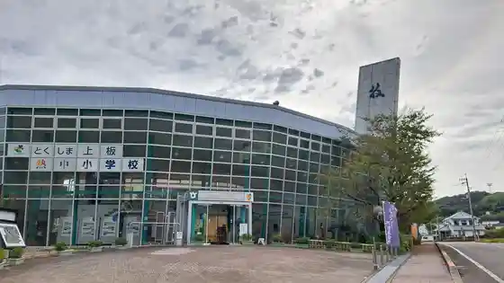
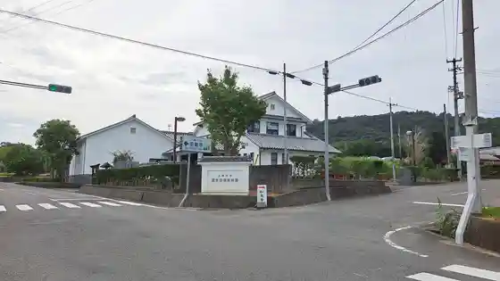

Japan / Tokushima / Kamiita
Kamiita
Kamiita · Tokushima
Kamiita
Highlighted on the Tokushima map.

Sights
Dairoku Ban Anraku Tera
Kamiita, Tokushima · Official / source link
Oyama Tera
Kamiita, Tokushima · Official / source link

Waza no Kan
Kamiita, Tokushima · Official / source link

Kamiita Folk History Museum
Kamiita, Tokushima · Official / source link

Famiriisupotsu Park
Kamiita, Tokushima · Official / source link
Dai Ju no Seki
Kamiita, Tokushima · Official / source link
Chichi Ho Shrine no Icho
Kamiita, Tokushima · Official / source link
Kamiita no Nichiyo City
Kamiita, Tokushima · Official / source link
Awa Wasambon Village
Kamiita, Tokushima · Official / source link
Mizuhiki Seizosho
Kamiita, Tokushima · Official / source link